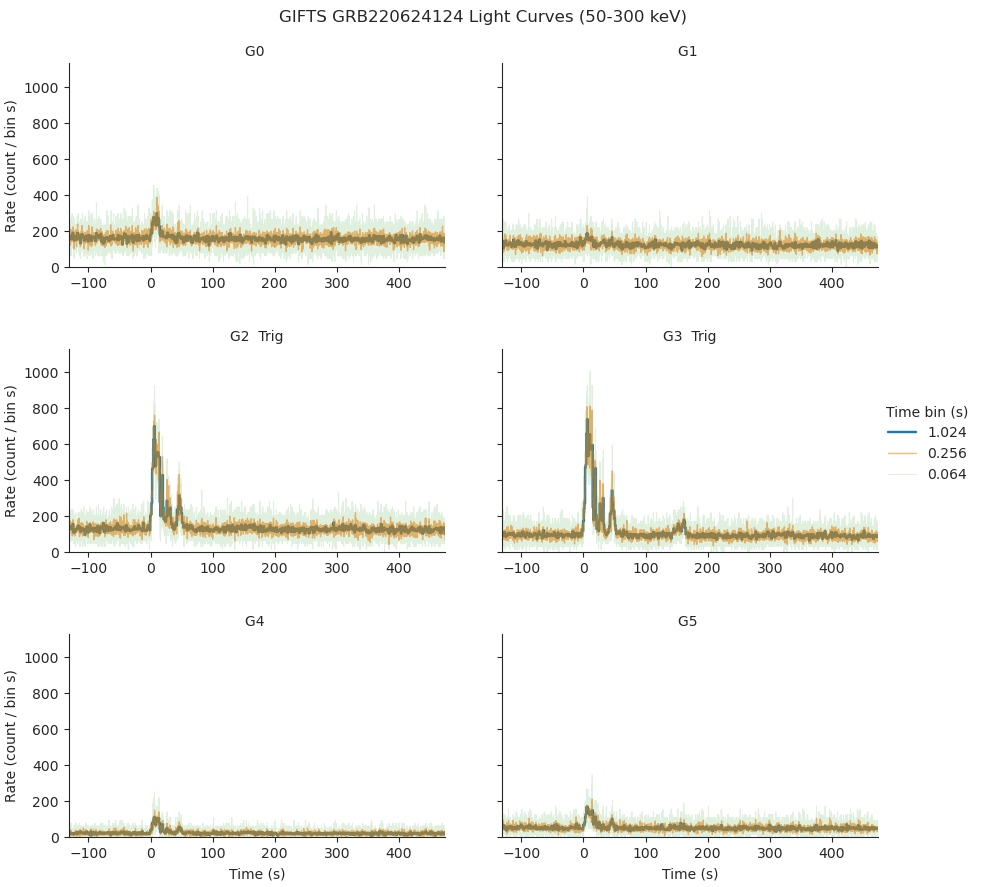
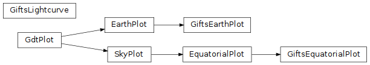

GIFTS-specific Plot Classes (gdt.missions.gifts.plot)¶
There are a few GIFTS-specific plot classes that extend the functionality of
those provided in The Plot Package. These classes
include GiftsEarthPlot, which may be used to create plots of
High Particle Flux Region Boundary Definitions,
and GiftsLightcurve, which temporally bins a set of TTEs and
generates corresponding detector lightcurve plots, similar to
the quicklook lightcurve plots provided by the Fermi-GBM catalog:
{kind=link}
Creating a GiftsLightcurve plot is demonstrated using GRB products contained
in the exemplar GIFTS burst catalog:
>>> from gdt.missions.gifts.catalogs import BurstCatalog
>>> burstcat = BurstCatalog()
>>> trigger_name = "bn220624124"
>>> trigdat = burstcat.get_trigdat(trigger_name=trigger_name)
>>> ttes = burstcat.get_tte(trigger_name=trigger_name)
The Trigdat and list of GiftsTte instances are then used to create the plot:
>>> import matplotlib.pyplot as plt
>>> from gdt.missions.gifts.plot import GiftsLightcurve
>>> lcplot = GiftsLightcurve(trigdat=trigdat,
ttes=ttes,
energy_range=(50, 300))
>>> plt.show()

Reference/API¶
gdt.missions.gifts.plot Module¶
Classes¶
|
Class for plotting GIFTS orbit and high particle flux regions |
|
|
|
Temporally bin a set of TTEs, and generate a single lightcurve plot for all detectors. |
Class Inheritance Diagram¶
